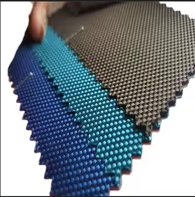
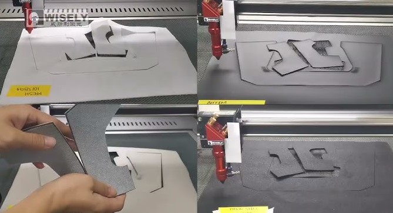
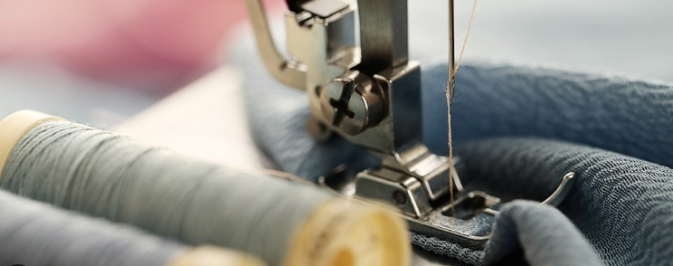
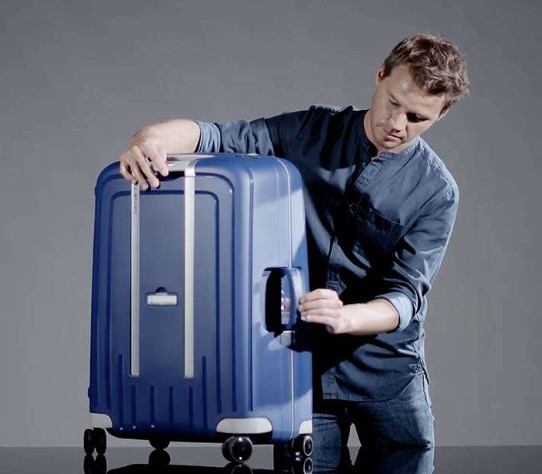
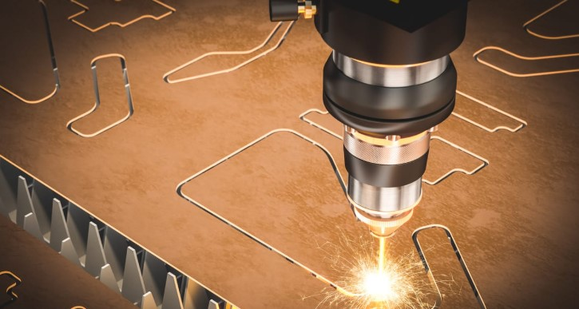
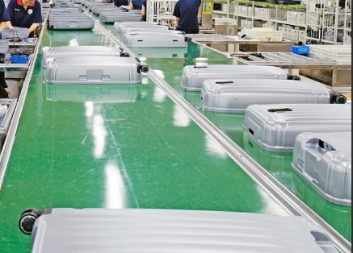

El Arte de Crear Roca: Nuestro Proceso
Cada canguro y maleta Roca es el resultado de una cuidadosa combinación de diseño, materiales de calidad y la pasión de nuestro equipo.
Canguros: Comodidad y Seguridad en Cada Puntada
Diseño y Selección de Materiales
Bocetos ergonómicos y elección de tejidos suaves, transpirables y resistentes, junto con herrajes de alta calidad.
Corte Preciso
Utilización de patrones avanzados para cortar las piezas de tela con la máxima precisión, optimizando el material.
Ensamblaje y Costura Reforzada
Unión experta de las piezas con costuras robustas, integrando hebillas, correas y sistemas de ajuste seguros.
Control de Calidad Riguroso
Pruebas exhaustivas de resistencia, seguridad de cierres y soportes de peso para garantizar la protección de tu bebé.
Maletas: Robustez y Estilo para tus Aventuras
Diseño Funcional y Materiales Duraderos
Creación de diseños prácticos y atractivos, seleccionando materiales como ABS, policarbonato o nylon de alta resistencia.

Moldeado y Corte Preciso
Moldeado por inyección para estructuras rígidas y corte exacto de tejidos para maletas blandas, siguiendo patrones optimizados.
Ensamblaje Robusto
Unión de componentes como cuerpos, forros, cremalleras resistentes, asas ergonómicas y ruedas duraderas.
Pruebas de Resistencia y Acabado
Sometimiento a pruebas de rodadura, impacto y resistencia de componentes, seguido de una inspección final y empaquetado cuidadoso.

En Roca, cada paso cuenta. Nos enorgullecemos de la calidad artesanal y la innovación que se refleja en cada uno de nuestros productos.